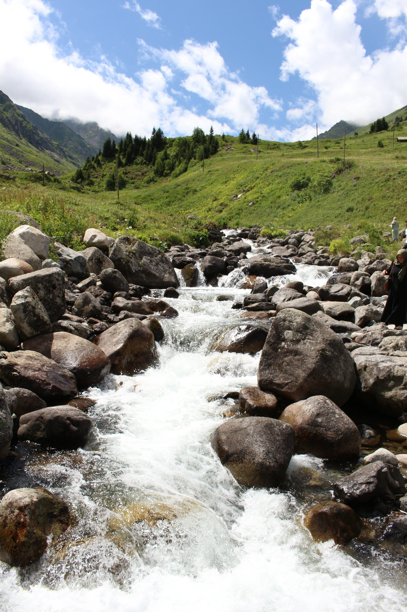

Information on pap high stream.
The stream at papatoetoe high school can be found at the back of the school Surrounded by trees planted by the enviroment group school, you're able to see the stream run through the bank and out through our school. In our local stream, we are able to observe all types of fauna and natural life like sea weeds and eels. Recently during a field trip, students spotted a variety of fish and insects living in the stream, highlighting the importance of preserving this natural habitat. our stream cleanup, we were able to gauge its health through looking at the wildlife of the stream, fauna, wildlife and its temperature. Using these factors, we were able to determine the stream's health (which is moderately healthy) and how it can be improved.